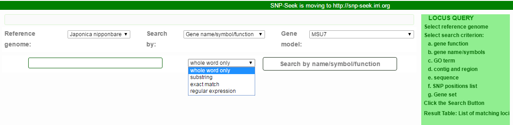
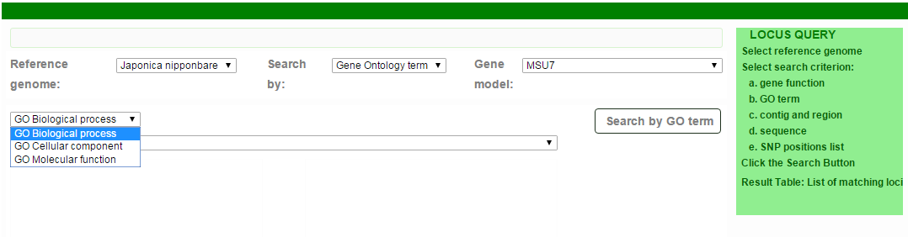
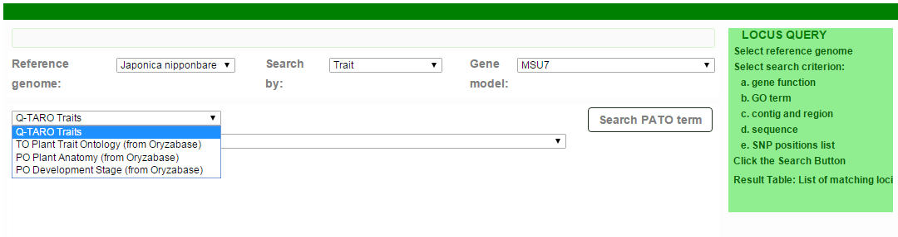
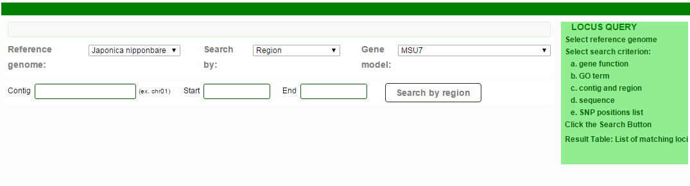
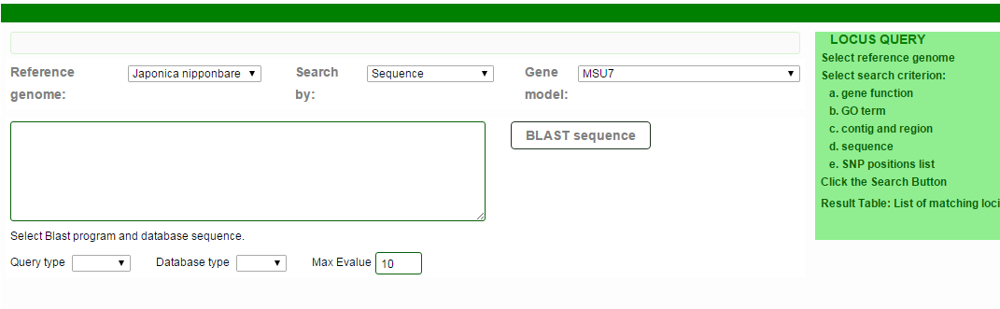
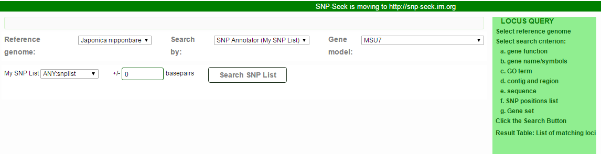
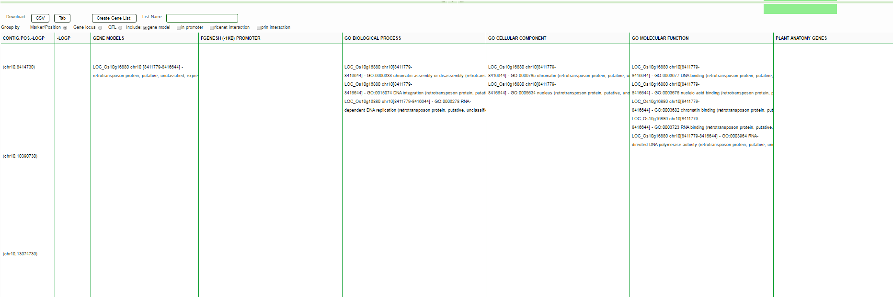
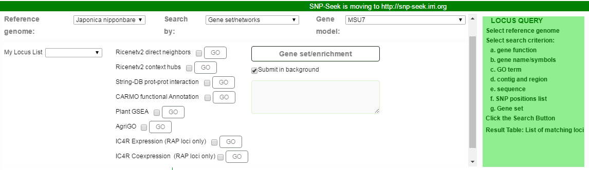

Locus Query
The Locus Query returns the list of loci (genes, QTL) using different search criteria.
Gene Locus Query
- Select Reference Genome from the drop-down menu.
-
Select the criterion to search by from the Search by drop-down menu.
-
Annotation (by source) - description/annotation assigned by the source (MSU or RAP)
- Gene name/symbol - gene names/symbols assigned from source, plus Oryzabase and Uniprot

The search string may be search as:
Whole word only - string occurs as a whole word (sorrounded by whitespaces or punctuation only and not by alphanumeric on either side)
Substring - occurs as a substring, may be sorrounded by any characters
Exact match - the string occurs exactly (no prefix, no suffix)
Regular expression - search as a (POSIX) regular expression
- Gene Ontology term - gene loci are annotated by GO terms (BP, CC, MF). The list includes terms that mapped with loci, and ancestors of these terms from the ontology. Selecting a term will display all loci associated with that term, and all its descendants exploiting the transitive closure of the ontology.

- Trait Ontology term - gene loci are annotated by Q-TARO traits from the QTARO database, Plant Tait and Plant Anatomy terms (TO, PO) from Oryzabase. The list includes terms that mapped with loci, and ancestors of these terms from the ontology. Selecting a term will display all loci associated with that term, and all its descendants exploiting the transitive closure of the ontology.

- Region - query for gene loci within the region defined by the contig, start and end positions. The list of contigs are updated based on the selected reference genome.

- Sequence - perform BLAST alignment on the selected reference and feature (dna, cdna, cds, pep)

- SNP list - annotate the SNPs in the list with associated genes and its annotations

The result is a table of markers with annotations. The table rows can be Grouped by Marker, Gene model or QTL. A Gene Locus list can be created from the annotations based on the selection of Gene Models, Gene of promoters, Gene with interaction from RiceNetv2 or PRIN.

The annotations and their sources are listed in this table:
Table S3. SNP annotations and sources (from NAR 2016)
| Annotation | Description | URL | Publication |
| GENE MODELS | Rice gene models | ||
| LOC_* MSU gene models | http://rice.plantbiology.msu.edu/ | (16) | |
| Os0 Os1 RAP gene models | http://rapdb.dna.affrc.go.jp/ | (17) | |
| OsNippo* Merged MSU, RAP and FGenesh++ gene models | https://snp-seek.irri.org/_jbrowse.zul?tracks=DNA,fgeneshv1gff | ||
| FGENESH (-1KB) PROMOTER | SNP in promoter region (-1kb) of FGenesh gene model described above | (18) | |
| GO BIOLOGICAL PROCESS, GO CELLULAR COMPONENT, GO MOLECULAR FUNCTION | Gene Ontology terms assigned to LOC_* gene models by MSU | http://rice.plantbiology.msu.edu/annotation_pseudo_goslim.shtml | (16) |
| PLANT ANATOMY GENES,PLANT DEVELOPMENT GENES | PO (Plant Ontology) Terms assigned to gene models by Oryzabase | http://shigen.nig.ac.jp/rice/oryzabase/gene/advanced/list | (20) |
| TRAIT ONTOLOGY GENES | TO (Plant Trait Ontology) Terms assigned to gene models by Oryzabase | http://shigen.nig.ac.jp/rice/oryzabase/gene/advanced/list | (20) |
| PLANTPROMDB PRED (-200) PROMOTER | Predicted Rice promoter region aligned with IRGSPv1 genome | http://linux1.softberry.com/data/plantprom/Links/PLPR_predicted_OS.seq | (25) |
| QTARO QTL | SNP in QTL region from QTARO | http://qtaro.abr.affrc.go.jp/qtab/table | (26) |
| QTARO TRAIT GENES | SNP in gene model from QTARO-OGRO | http://qtaro.abr.affrc.go.jp/ogro/table | (21) |
| RICENETV1 INTERACTIONS, RICENETV2 INTERACTIONS | Interacting genes, genes in direct neighborhood with 'GENE MODELS' using interactions from RiceNet database | http://www.inetbio.org/ricenet/Network_nga_form_conv.php | (27) |
| PRIN EXPERIMENTAL, PRIN PREDICTED | Interacting proteins, genes coding proteins that interact with proteins coded by 'GENE MODELS', from PRIN database | http://bis.zju.edu.cn/prin/ | (28) |
| SNPEFF | SNP effects detected on MSU gene models, using SNPEff program | http://snpeff.sourceforge.net/ , http://www.ncbi.nlm.nih.gov/pmc/articles/PMC3679285/ | (25) |
- Locus list/Gene set - submit the list of gene loci to various Gene Set Enrichment Analysis, rice pathway and interaction databases. This feature auto-submit the list to the selected sites and the corresponding GO button is enabled when the result is ready.

- For Nipponbare, select the gene model to use. The other gene models are returned as overlapping genes.
Created with the Personal Edition of HelpNDoc: Full-featured Kindle eBooks generator